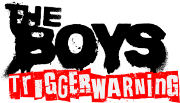
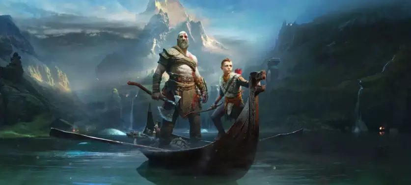

Review – Assassin’s Creed Shadows para Nintendo Switch 2
14/12/2025
O lançamento de Assassin’s Creed Shadows no Nintendo Switch 2 é considerado um feito técnico e, apesar de algumas ressalvas, a portabilidade é o grande destaque.
O jogo foi lançado para o Switch 2 em 2 de dezembro de 2025, cerca de nove meses após o lançamento em outras plataformas.
O Veredito Geral
A Ubisoft conseguiu entregar um port surpreendentemente competente e ambicioso para o hardware portátil. Embora existam cortes visuais inevitáveis em comparação com o PS5 e Xbox Series X, o jogo preserva a vastidão e a atmosfera do Japão Feudal, e a experiência no modo portátil é, para muitos críticos, a melhor forma de jogar no Switch 2.
Portabilidade Imersiva: Conseguir jogar um título AAA de mundo aberto da nova geração, como Shadows, em qualquer lugar é um enorme diferencial.
DLSS e VRR: O uso do DLSS e do VRR no modo portátil são cruciais para manter a jogabilidade a 30 FPS estáveis e com boa qualidade de imagem na tela menor.
Controles por Toque: A inclusão de suporte a tela sensível ao toque nos menus, mapas e esconderijos é um recurso exclusivo e intuitivo do Switch 2.
Progressão Cruzada: O suporte total ao cross-save via Ubisoft Connect permite que você continue sua jornada de Yasuke e Naoe de um PC ou console onde parou.
The Boys terá jogo oficial feito por estúdio brasileiro
09/12/2025
A franquia The Boys terá seu primeiro jogo oficial, intitulado The Boys: Trigger Warning, desenvolvido por um estúdio brasileiro
Estúdio Desenvolvedor ARVORE, estúdio brasileiro premiado com um Emmy e especializado em experiências imersivas.
Título do Jogo The Boys: Trigger Warning
Formato Jogo exclusivo de Realidade Virtual (VR), no gênero de ação furtiva (stealth-action).
Plataformas PlayStation VR2 (PS VR2) e Meta Quest 3.
Previsão de Lançamento Primeiro semestre de 2026 (com lançamento previsto para março de 2026), coincidindo com a estreia da última temporada da série.Autenticidade O jogo é considerado canônico (parte da história oficial) e se passa paralelamente à quarta temporada da série.
Autenticidade O jogo é considerado canônico (parte da história oficial) e se passa paralelamente à quarta temporada da série.
Elenco da Série: Para garantir a autenticidade, vários atores da série reprisaram seus papéis no jogo, incluindo Laz Alonso (Mother’s Milk), Colby Minifie (Ashley Barrett) e P.J. Byrne (Adam Bourke). Há também uma participação especial de Jensen Ackles como uma versão distorcida do Soldier Boy, criada para o game.

O fundador da ARVORE, Ricardo Justus, destacou que o jogo foi desenvolvido em colaboração direta com os roteiristas e o elenco da série, garantindo que ele capture o humor ácido, a ousadia e a brutalidade que tornaram The Boys um fenômeno.
Red Dead Redemption Chegou à Netflix (Games) e Ganhou Novo Trailer!
03/12/2025
Jogo está disponível no app do streaming para iOS e Android
O jogo clássico da Rockstar Games, Red Dead Redemption (incluindo a expansão Undead Nightmare), foi disponibilizado para dispositivos móveis (iOS e Android) através do catálogo de jogos da Netflix, o Netflix Games.
O que você precisa saber:
Disponibilidade: O jogo está disponível para assinantes da Netflix em seus dispositivos iOS e Android.
Custo: Não há custo adicional. O jogo faz parte da sua assinatura regular da Netflix, assim como outros títulos da Rockstar Games, como a GTA Trilogy.
Novidades: Esta versão mobile traz o jogo completo, juntamente com a expansão Undead Nightmare, e conta com controles adaptados para telas sensíveis ao toque.
Trailer: Um novo trailer foi lançado para promover o jogo em todas as suas novas plataformas (Netflix Games, PS5, Xbox Series X|S e Nintendo Switch 2).
Gameplay de GTA 6 é publicada por ex-funcionário da Rockstar Rockstar
02/12/2025
Vazamento de Animações de GTA 6 por Ex-Funcionário da Rockstar
Rockstar Games publicou trechos de animações de GTA 6 em seu portfólio online, o que rapidamente se tornou um vazamento de material do jogo.
Aqui estão os principais detalhes sobre o ocorrido:
Conteúdo Vazado: O vídeo, que tinha cerca de 19 segundos, mostrava animações preliminares e em desenvolvimento, focadas no alto nível de detalhe que a Rockstar costuma priorizar.
Uma das cenas mostrava um personagem masculino (provavelmente Jason) tirando uma bicicleta de um suporte público e montando nela.
Outra cena exibe a personagem feminina (provavelmente Lucia) descendo da caçamba de uma caminhonete.
Aparência: As cenas não são de "gameplay final" e sim de demonstrações de animação, mas confirmam o foco da Rockstar em movimentos detalhados e realistas. Por exemplo, é possível ver os pedais da bicicleta se movendo levemente ao serem usados.
Fonte: O material veio do portfólio de um ex-funcionário, que trabalhou em títulos anteriores como Red Dead Redemption 2 e Max Payne 3, o que reforça a autenticidade das imagens.
Reação da Rockstar: O vídeo foi originalmente postado no Vimeo e logo foi removido, indicando que a Rockstar Games considerou o conteúdo como vazamento de informações confidenciais.
Esse vazamento é notável por ser um dos poucos materiais autênticos de GTA 6 a surgir na internet, em meio a muitas falsificações geradas por IA.
Os 10 melhores games da PS Plus Extra para jogar em novembro de 2025
27/11/2025
Serviço traz exclusivos da Sony e outras joias para assinantes
A PlayStation Plus Extra costuma ser o meio-termo mais agradável para assinantes do serviço: por um preço intermediário, jogadores têm acesso aos benefícios básicos da Plus, e ainda ganham um catálogo respeitável de games gratuitos. O repertório traz alguns excelentes exclusivos da Sony, mas também conta com títulos third-party indispensáveis. Para te ajudar a escolher sua próxima jogatina, selecionamos os 10 melhores jogos do catálogo para se jogar agora (novembro de 2025).

Bloodborne
The Last of Us: Parte I
Blue Prince
Sayonara Wild Hearts
Marvel's Spider-Man
Final Fantasy VII Remake
God of War (2018)
Hollow Knight
Alan Wake 2
Digimon Survive
Battlefield 6 EA diz que jogo foi o FPS mais vendido do ano
19/11/2025
O Sucesso do Novo Battlefield
A Electronic Arts (EA) realmente divulgou dados que mostram o sucesso estrondoso do novo título, e é muito provável que a afirmação se refira a um marco que o jogo atingiu rapidamente.
Maior Lançamento da Série: O jogo quebrou recordes internos da EA e da série Battlefield, vendendo mais de 7 milhões de cópias nos primeiros três dias.
Maior Número de Jogadores Simultâneos: Também alcançou o maior número de jogadores simultâneos da história da franquia, especialmente notável no PC (Steam).
FPS Mais Vendido do Ano (Afirmação): Com base nesses números de lançamento extremamente altos, e em comparação com a concorrência imediata no gênero, a EA afirmou (ou analistas apontaram) que ele se tornou o shooter mais vendido de 2025 em termos de unidades vendidas até aquele momento.
Xbox revela valores oficiais do ROG Xbox Ally no Brasil
19/11/2025
Consoles chegam na faixa de R$ 6.599 a R$ 10.999
Essa é uma ótima notícia para o mercado brasileiro de portáteis! A ASUS (em parceria com a Xbox) revelou os preços oficiais da nova linha ROG Xbox Ally no Brasil.
ROG Xbox Ally (Modelo Base): R$ 5.999
ROG Xbox Ally X: R$ 9.999
A pré-venda desses portáteis está marcada para começar nesta sexta-feira, 21 de novembro, na loja oficial da ASUS e em varejistas parceiros.
Ambos os modelos rodam Windows 11 com interface otimizada para uso portátil e oferecem acesso direto ao Game Pass da Xbox, além de serem compatíveis com plataformas como Steam e Epic Games.
He-Man Novo game de sobrevivência ganha imagens e gameplay
28/10/2025
Jogo parece ser um "Vampire Survivors" de He-Man
Um novo jogo da franquia He-Man foi revelado recentemente, chamado de Masters of the Universe: Guardians of Grayskull, um título para dispositivos móveis baseado no universo da franquia.
Pelas imagens e o pequeno teaser de jogabilidade, o título parece ser parecido com Vampire Survivors, com o jogador tendo que enfrentar hordas de inimigo durante um período de tempo.
Também foi revelado que será possível invocar os Guardiões de Grayskull como He-Man, Gorpo e outros personagens da franquia. Até o momento, o jogo não possui uma data de lançamento específica, apenas aparecendo nas lojas de aplicativos.
Pelo visto, será possível melhorar seus equipamentos para causar mais dano nos inimigos, além de provavelmente outros tipos de melhorias como novos ataques, novas armas e novos personagens.
De volta à Grécia: artes vazadas de God of War revelam o multiplayer cancelado
28/10/2025
Vazaram neste domingo (26) diversas imagens conceituais do jogo multiplayer de God of War, cancelado recentemente pela Sony. As artes mostram que o projeto levaria Kratos e os jogadores de volta para a Grécia — onde se passou a história antes do reboot em 2018.
O site MP1st divulgou as imagens, com cenários como cavernas, templos e um local que pode ser o arsenal de Hades. Elas também mostram que certos ambientes teriam uma versão “normal” e outra “corrompida”.
O multiplayer de God of War estava em produção pela Bluepoint Games, que também trabalhou em Shadow of the Colossus e Demon’s Souls. Não se sabe se ele ocorreria durante os eventos da trilogia original ou se seria visto o retorno dos deuses gregos após o “massacre” de Kratos.
As artes mostram que a Bluepoint também pensou, em algum momento, em testar a mitologia nórdica. Não se sabe o caminho que eles seguiriam, mas é curioso notar a exploração de diferentes temáticas para o mesmo projeto. Confira a imagem abaixo:
God of War na forma de jogo como serviço
A ideia de trazer God of War na forma de um jogo como serviço faz parte dos esforços da Sony neste cenário, que colocou diversos estúdios para focarem nesta estratégia desde meados de 2019 e 2020.
Além da Bluepoint Games, a Bend Studios (Days Gone) trabalhou em uma experiência multiplayer de The Last of Us — que também foi cancelada sem maiores detalhes sobre o seu desenvolvimento.
Mesmo que as artes de God of War contenham Hades, não foi revelado se o deus grego dos mortos seria o principal antagonista ou teria um papel de destaque na trama. Ele foi apresentado no primeiro título, lançado em 2005 e seguiu até GoW III — que finalizou a trilogia com este panteão.
Em God of War (2018) e God of War Ragnarök (2022), Kratos viveu uma nova aventura ao lado de seu filho Atreus. Agora, contra os deuses nórdicos. Porém, nada foi dito oficialmente sobre uma sequência e para qual caminho eles seguirão a partir disso.